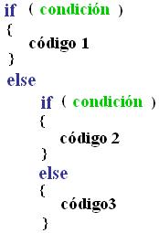

Objetivos:
- Que apliques los conocimientos que adquiriste sobre los estatutos
IF, IF-ELSE e IF anidados en el desarrollo de un programa en el que utilices
condiciones
- Que apliques el uso de operadores relacionales
- Que ayudes a tus compañeros a encontrar la mejor solución
a los programas

Forma de trabajo:
Actividad en equipos colaborativos e individual

Tiempo estimado:
90 minutos

Instrucciones:
- Intégrate con tu equipo colaborativo y sigue las indicaciones
del profesor.
- Junto con tus compañeros de equipo, analiza cada uno de
los ejercicios que se presentan a continuación. Identifiquen, en
equipo, cual sería el algoritmo para la solución de cada uno
de los ejercicios. Recuerden documentarlos en sus hojas membretadas.
- De manera individual escribe un programa en C para cada uno de
los ejercicios. Recuerda basarte en el algoritmo que se generó en
el equipo.
- Una vez que hayas terminado tu programa, es tu responsabilidad
ayudar a tus compañeros de equipo a que terminen su programa.
- Entrega, vía la plataforma, los archivos *.c que
contengan los programas en C.
Utiliza el siguiente esquema como apoyo para desarrollar tu laboratorio:

Ejercicio
1.
- Desarrolla un programa completo en C, que despliegue en orden
ascendente (de menor a mayor) 3 números dados por el usuario. El
programa deberá pedir los tres números y posteriormente desplegarlos
en forma ascendente.
¡¡
Utiliza la sentencia de control if-else !!
Dados los números -9, 4, 1
Los números de menor a mayor son: -9, 1, 4
Dados los números 100, 1, -8
Los números de menor a mayor son: -8, 1, 100
Dados los números -24, 0, -896
Los números de menor a mayor son: -896, -24, 0.
- Guarda el archivo con el nombre: B1_Matricula.c
Ejercicio
2.
- Desarrolla un programa completo en C que despliegue el resultado
de evalar la siguiente función con el valor dado por el usuario.
 .
. - Guardar el
archivo con el nombre: B2_Matricula.c
Ejercicio
3
- Desarrolla un programa completo en C que imprima el mensaje apropiado
para una calificacion dada por el usuario. Los mensajes a imprimir
serán los siguientes:
|
Calificación
|
Mensaje
|
|
100
|
Excelente
|
|
90 o más, pero menos de 100
|
Muy bien
|
|
80 o más, pero menos de 90
|
Bien
|
|
70 o más, pero menos de 80
|
Regular
|
|
Menos de 70
|
Deficiente
|
.
- Guardar el archivo con el nombre: B3_Matricula.c

Forma de entrega:
- Envía tu laboratorio por blackboard, no se aceptarán
laboratorios por ningún otro medio.
- Envía solo tus archivos *.c.
- Los laboratorios enviados posteriormente a la fecha límite
NO SERÁN CALIFICADOS.
.
INSTRUCCIONES PARA ENVIAR TU LABORATORIO
POR BLACKBOARD
- Haz clic en la actividad de Entrega de Laboratorio.
- Escribe comentarios si lo consideras necesario.
- Da clic en el botón de Browse My Computer y localiza
el archivo *.c. Si necesitas agregar más archivos repite este
proceso hasta agregar todos tus archivos.
- Haz clic en Submit.
- Al indicar que ha subido exitosamente hacer clic en OK.
. |